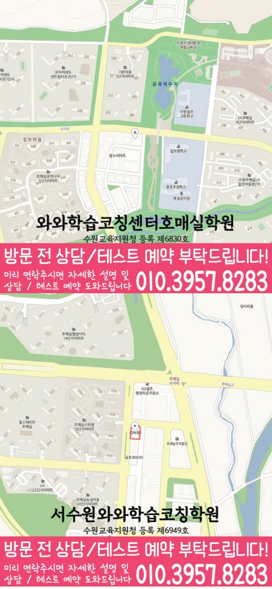

국어 수업 가능 학년
초1 · 초2 · 초3 · 초4 · 초5 · 초6 · 중1 · 중2 · 중3 · 고1 · 고2
ACADEMIC SUPPORT LOCAL GUIDE
수원 금곡동 보습학원 선택 시 학교 진도 연계, 복습·과제·오답 관리, 수업 가능 학년과 센터 위치를 확인할 기준을 정리했습니다.
30초 핵심 안내
결론부터 말하면, 경기 수원시 수원 금곡동에서 보습학원을 찾는 최근 단원은 무리 없이 따라가지만 응용 문제에서 풀이 방향을 잃는 학생에게는 진도를 빠르게 늘리는 곳보다 지금 학년에서 남은 학습 공백을 진단하고 복습·과제·오답을 한 흐름으로 관리하는 곳이 더 현실적입니다. 상담에서는 학습실천력을 포함해 수업 방식, 피드백 주기, 결석 처리와 실제 등원 동선을 구체적으로 확인해야 합니다. 수원 금곡동 페이지에 제공된 수업 주소는 경기 수원시 권선구 호매실로104번길 90 JD타워 205호이며, 이 위치가 학생의 학교·가정 일정과 맞는지가 선택의 첫 조건입니다.
수원 금곡동은 수업 가능 생활권 기준입니다. 실제 방문 센터는 와와학습코칭센터 서수원점이며, 주소와 등록 정보는 아래 센터 기준 정보에서 확인할 수 있습니다.
초1 · 초2 · 초3 · 초4 · 초5 · 초6 · 중1 · 중2 · 중3 · 고1 · 고2
초1 · 초2 · 초3 · 초4 · 초5 · 초6 · 중1 · 중2 · 중3 · 고1
초1 · 초2 · 초3 · 초4 · 초5 · 초6 · 중1 · 중2 · 중3 · 고1 · 고2


센터 기준 정보
센터명·주소·등록 정보와 교습비 확인 경로를 상담 전에 살펴볼 수 있도록 정리했습니다.
경기 수원시 수원 금곡동 상담 기준
경기 수원시 권선구 호매실로104번길 90 JD타워 205호
수원교육지원청 등록 제6949호
실제 수업 가능 시간은 학년·과목별 일정에 따라 상담에서 확인합니다.
동네명은 수업 가능 지역을 찾기 위한 안내 기준입니다.
능실초 · 금호초
오현초호매실중 · 능실중 · 영신중 · 고색중
호매실고 · 영신여고 · 고색고 · 율천고 · 동우여고
센터명·주소·등록번호·가능 학년·학교 참고 정보는 제공된 센터 자료를 기준으로 정리했으며, 실제 수업 범위와 일정은 상담에서 다시 확인합니다.
지역별 학습 안내
학생의 과목별 학습 상황과 상담 전에 확인할 기준을 여섯 가지 주제로 나누어 정리했습니다.
수원 금곡동에서 가정한 핵심 학생 유형은 최근 단원은 무리 없이 따라가지만 응용 문제에서 풀이 방향을 잃는 학생입니다. 수원 금곡동에서는 의지 문제로 결론 내리기 전에 문제 해석, 개념 연결, 첫 시도와 채점 후 재풀이를 각각 기록하는 편이 정확합니다. 경기 수원시 수원 금곡동 학생에게 문제 조건을 표시하고 적용할 개념을 한 문장으로 말한 뒤 첫 식을 세우는 연습이 반복될 때 학습이 막히는 지점을 더 정확히 줄일 수 있습니다. 수원 금곡동의 현재 배우는 범위와 누적 공백을 한 표에서 구분하면 다음 단원 진행과 보완 학습의 순서를 정하기 쉽습니다.
“학습실천력”은 성격을 평가하는 말이 아니라 반복해서 관찰할 수 있는 학습 행동으로 정의해야 합니다. 수원 금곡동에서 학습실천력을 확인할 때는 공부 시작 시각, 집중이 끊기는 순간, 질문 표시, 과제 완료, 오답 재풀이처럼 기록 가능한 항목을 정하십시오. 수원 금곡동의 학습실천력 관련 안내에서는 응용 풀이가 막히는 학생에게는 잘한다는 격려만큼 작게 성공한 행동을 구체적으로 확인해 주는 과정이 필요합니다. 수원 금곡동 보습학원 상담에서 학습실천력을 점수 한 번으로 판단한다면, 관찰 기간과 기록 방식, 다음 조정 기준을 다시 물어보는 편이 좋습니다.
수원 금곡동 보습학원의 관리가 구체적인지는 수업 전·중·후의 연결로 판단할 수 있습니다. 수원 금곡동 학생이 시작 문제로 준비도를 확인하고, 설명 뒤 유사 문제를 독립적으로 풀고, 틀린 이유를 분류한 뒤 며칠 후 다시 확인하는지가 핵심입니다. 최근 단원은 무리 없이 따라가지만 응용 문제에서 풀이 방향을 잃는 학생에게는 문제 조건을 표시하고 적용할 개념을 한 문장으로 말한 뒤 첫 식을 세우는 연습을 한 번의 조언이 아니라 반복 가능한 절차로 만들어야 합니다. 수원 금곡동 과제는 페이지 수뿐 아니라 예상 시간과 필수·보완 구분이 있어야 학생도 우선순위를 선택할 수 있습니다.
수원 금곡동 페이지의 제공 수업학교에는 능실초, 금호초 등이 포함됩니다. 수원 금곡동에서는 동일한 학교를 다니더라도 학년과 시기, 실제 교과 수업에 따라 진도와 평가 방식이 달라질 수 있으므로 과거 경험만으로 범위를 추정해서는 안 됩니다. 경기 수원시 수원 금곡동 학생의 주간 계획은 범위표, 학교 과제 공지, 수업 필기와 교과서 표시를 기준으로 수정되어야 합니다. 수원 금곡동에서 목록에서 찾기 어려운 학교는 실제 학교 자료를 제시해 수업 가능 여부를 직접 확인하는 편이 정확합니다.
학원 상담에 앞서 먼저 정리할 것은 수원 금곡동 학생의 최근 자료와 생활 시간을 한 장에 정리하는 것입니다. 수원 금곡동 학부모가 답변을 기록할 때는 최근 시험이나 확인 문제, 틀린 교재, 학교 과제, 공부 가능한 요일을 제시하고 응용 풀이가 막히는 문제를 교사가 어떻게 진단하는지 들어 보십시오. 수원 금곡동에서 질문을 준비할 때는 수업 방식, 반 편성, 결석·보강, 과제량, 오답 재확인, 학부모 연락과 비용 기준을 항목별로 적으면 설명을 감정이 아니라 정보로 비교할 수 있습니다. 경기 수원시 수원 금곡동 학부모가 비교할 때는 최종 결정에서는 결과를 미리 약속하는 표현보다 학생이 실제로 실행할 수 있는 첫 주 계획과 수정 기준이 제시되는지를 보아야 합니다.
검색 기준 지역은 경기 수원시 수원 금곡동이지만 제공된 학원 주소는 경기 수원시 권선구 호매실로104번길 90 JD타워 205호이므로 동네 키워드만으로 거리를 판단해서는 안 됩니다. 같은 수원 금곡동 에서 등원하더라도 출발지와 귀가 방식이 다르면 수업 시간 선택이 달라집니다. 수원 금곡동 등원 계획에서는 가장 여유로운 날이 아니라 가장 일정이 빡빡한 날을 기준으로 출발 시각, 수업 종료, 귀가까지 계산하는 것이 현실적입니다. 학습실천력을 포함한 부가 조건도 실제 동선과 맞지 않으면 장기 선택의 우선순위가 낮아질 수 있습니다.
FAQ
등록 관련 항목을 검토할 때에는 첫 주 계획과 이후 조정 기준으로 이어지는지 확인해야 합니다. 최근 단원은 무리 없이 따라가지만 응용 문제에서 풀이 방향을 잃는 학생이라면 현 학년 학습에서 놓친 부분을 나누어 보고 문제 조건을 표시하고 적용할 개념을 한 문장으로 말한 뒤 첫 식을 세우는 연습을 실제 수업과 과제에 연결하는지를 우선 확인하는 편이 좋습니다.
상담 답변을 비교 가능한 정보로 만들려면 학생 일정과 학습 상태에 실제로 맞는지 구분해야 합니다. 수원 금곡동 상담에서는 추상적인 평가보다 시작 시각, 집중 중단, 질문, 과제 완료와 오답 재풀이처럼 관찰 가능한 행동으로 정의해야 합니다.
학교 정보는 계획의 출발점일 뿐이며 공통 학습 뒤 학생별 보완 과제가 이어지는지 확인해야 합니다. 성적 변화는 학생의 시작 수준·평가 난도·실행 기간의 영향을 받기 때문에 수원 금곡동 상담에서는 향상 폭보다 확인할 과정 지표를 먼저 정해야 합니다. 수원 금곡동 학생은 조건을 읽은 뒤 첫 식을 스스로 세우는 횟수 같은 과정 지표와 학교 평가를 함께 추적하며 계획을 조정하는 설명이 더 현실적입니다.
수원 금곡동 보습학원에서 학교 진도를 반영할 때에는 현재 학년 진도와 누적 공백을 별도의 항목으로 나누어야 합니다. 수원 금곡동 페이지에 제공된 학교 정보는 능실초, 금호초입니다. 같은 수원 금곡동 지역이라도 학교 자료가 다를 수 있으므로 실제 범위와 교재를 먼저 확인하고, 목록 외 학교는 센터에 수업 가능 여부를 문의하는 편이 안전합니다.
수원 금곡동 보습학원에서 학교 진도를 반영할 때에는 학생이 가져온 최근 시험지와 과제 공지를 먼저 대조해야 합니다. 수원 금곡동 페이지에 제공된 주소는 경기 수원시 권선구 호매실로104번길 90 JD타워 205호입니다. 수원 금곡동 학생의 이동 가능성은 학교·가정 출발 시간을 구분하고 가장 바쁜 요일의 종료·귀가 시각을 계산한 뒤 편의 서비스 여부까지 확인해 판단하세요.
상담 상황 예시
아래 두 문장은 실제 이용자의 인용이 아니라, 수원 금곡동 학부모가 상담 후 남길 수 있는 후기 형식의 예시입니다.
수원 금곡동 상담 전에는 응용 풀이가 막히는 문제를 단순히 의지 부족으로 생각했는데, 최근 교재와 과제 기록을 나눠 보니 무엇을 먼저 바꿔야 할지 이해하기 쉬웠습니다. 수원 금곡동에서는 결과를 서두르기보다 먼저 문제 조건을 표시하고 적용할 개념을 한 문장으로 말한 뒤 첫 식을 세우는 연습을 확인하자는 기준이 현실적으로 느껴졌습니다.
수원 금곡동 상담에서는 학생에게 질문하기 편한지, 숙제량을 감당할 수 있는지, 귀가가 부담스럽지 않은지를 따로 물어본 점이 좋았습니다. 수원 금곡동에서 학원을 고를 때 성적 약속보다 초기 일주일의 현실적인 학습표을 보는 이유를 이해하게 됐습니다.